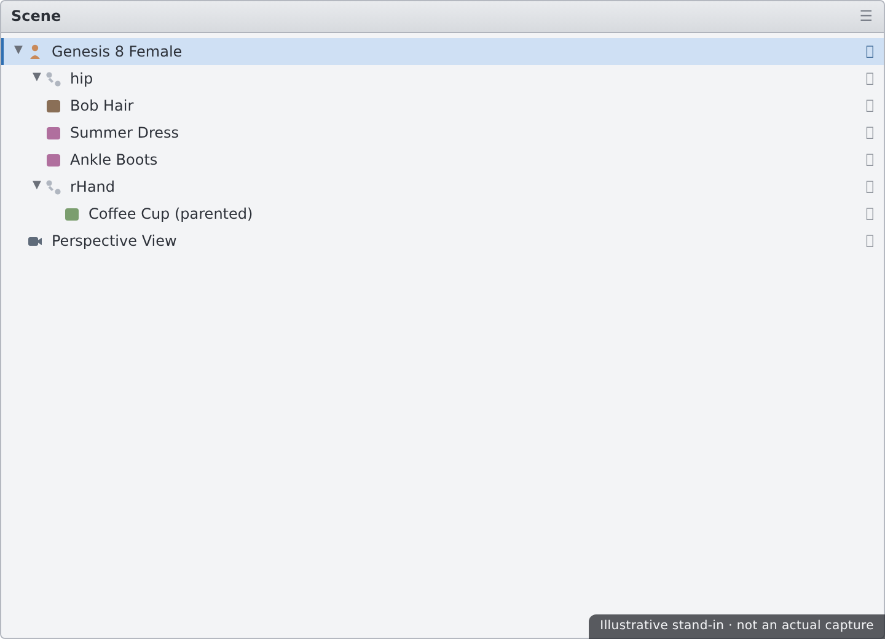
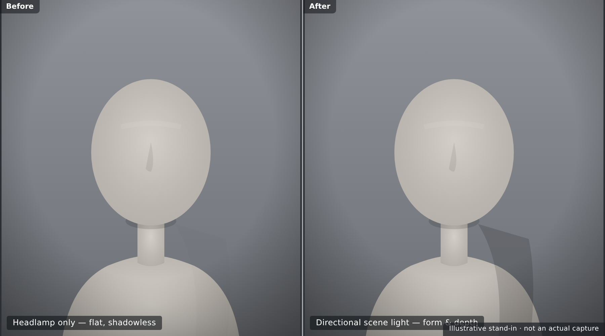

🎬 Lesson 3.1: Building a Scene
You have a character — posed, shaped, and surfaced. Right now they're floating in an empty void. This lesson gives them a world. You'll add an environment to stand in, dress the set with props, fit hair and clothing that follow the figure automatically, and — most importantly — set up a camera to frame the shot. A great render is half lighting and half composition, and composition starts here: deciding where the camera stands, what it sees, and what it leaves out. By the end you'll have a staged scene ready for the lights of Lesson 3.2.
🎯 Learning Objectives
By the end of this lesson, you will be able to:
- Explain what a scene is and how assembling one differs from building a figure
- Load environments and sets to give a figure a place to stand
- Add and position props, and parent them so they move together
- Fit hair and clothing to a figure and understand how auto-fit works
- Create a dedicated camera and understand it versus the Perspective view
- Apply basic framing and composition — focal length, the rule of thirds, and headroom
- Describe the difference between the headlamp and real scene lights
Estimated Time: 55 minutes
Project: Your character placed in an environment with props, hair, and clothing, framed by a dedicated camera — a staged scene ready to light and render in the rest of Module 3.
In This Lesson
What Is a Scene?
Up to now you've been working on a single figure. A scene zooms out: it's the whole assembled world — your figure, plus the environment they stand in, the props around them, the clothing they wear, the cameras that view them, and (next module) the lights. Building a figure is sculpting; building a scene is staging.
💡 The one-sentence version: A scene is everything loaded into Daz Studio at once — figures, environments, props, cameras, and lights — arranged in 3D space and listed together in the Scene pane.
📖 Definition
Scene: the complete collection of objects in your Daz Studio session, shown as a hierarchy in the Scene pane. Every figure, prop, camera, and light is a node in that list, and the whole thing saves to a single .duf scene file.
The Scene pane is your map. As a scene grows, it becomes the fastest way to select, hide, rename, and organize objects — far more reliable than hunting for them in the viewport.
💡 Staging is non-destructive
Adding an environment, a prop, or a camera never alters your figure — it just places more objects in the same space. You can rearrange a scene endlessly without touching the pose, shape, or surfaces you worked so hard on. Everything is an independent node you can move, hide, or delete.
⚠️ Important Note: Complex environments and high-resolution props can be heavy — they eat memory and slow the viewport and render. Start with what the shot actually needs. You can't see what the camera doesn't frame, so there's no reason to load a whole city block for a head-and-shoulders portrait.
Environments & Sets
An environment (or set) is the world your figure occupies — an interior room, a street, a forest, or just a simple backdrop. Loading one is the same double-click workflow you already know from figures and poses: find it in Smart Content or the Content Library and double-click to add it to the scene.
📖 Definition
Environment / set: a prop or group of props that forms a location — walls, floors, terrain, and background geometry. Some environments are a single large prop; others are a collection you load together. Either way they arrive in the Scene pane as nodes you can position or hide.
Kinds of environment you'll meet
| Type | What It Is | Good for… |
|---|---|---|
| Full 3D set | Modeled rooms or locations you can move the camera through | Wide shots, believable depth, reflections in the scene |
| Backdrop / backplane | A flat image plane behind the figure | Quick portraits where the background is out of focus anyway |
| HDRI environment | A 360° image that both lights and backgrounds the scene | Fast, realistic lighting — covered in Lesson 3.2 |
💡 Put the figure where the set expects
A set is usually modeled around its own origin, so a freshly loaded figure may end up standing through a wall or floating above the floor. Select your figure and move it into the set — or use the environment's included camera or pose presets if it ships with them, which snap everything into place.
⚠️ Important Note: Big interior and exterior sets are among the heaviest assets in Daz. If your viewport crawls after loading one, hide parts you can't see, or switch to a simple backdrop for portraits. A lighter scene is faster to pose, frame, and render.
Props & Set Dressing
Once the location is in place, props bring it to life: a chair to sit in, a mug on a table, a sword in a hand. Set dressing is the craft of placing those props so the scene feels lived-in and intentional rather than empty.
📖 Definition
Prop: any non-figure object you add to a scene — furniture, weapons, plants, vehicles, and small details. Props don't have a figure's full skeleton, though some have their own moving parts (a lid, a drawer, a trigger) exposed as posable nodes.
Parenting: making objects move together
The key skill with props is parenting — attaching one object to another so it follows along. Parent a mug to a hand and the mug travels with every hand movement; parent a hat to the head and it stays put when the figure looks around.
📖 Definition
Parenting: making one node a child of another so it inherits the parent's movement. In the Scene pane you drag the child onto the parent (or use Edit → Object → Parent…). The child keeps its own position relative to the parent and moves whenever the parent does.
✅ Pro Tip — parent to the closest bone
For a prop held in a hand, parent it to the hand bone, not the whole figure — then it tracks the hand precisely as the arm poses. You can select a specific bone as the parent by expanding the figure's node tree in the Scene pane before parenting.
⚠️ Important Note: Parenting is not the same as fitting. Parenting glues a rigid prop to a node; fitting (next section) makes flexible clothing bend and follow the figure's pose. Use parenting for hard props like mugs and swords, and fitting for anything that should deform with the body.
Hair & Clothing
Hair and clothing are special props designed to conform to a figure — they follow its shape and pose automatically. Add them the same way you add anything else: select the figure, then double-click the hair or outfit, and Daz fits it in place.
📖 Definition
Conforming (fitted) item: clothing or hair rigged to match a figure's skeleton, so it bends with the pose and reshapes with morphs. When you load it onto a selected figure, it becomes fitted to that figure and moves as one with it.
Auto-fit: adapting across generations
When you load clothing made for one figure onto a different generation, Daz offers Auto-Fit — it reshapes the garment to the new body using a clone. It's remarkably good, but not magic: complex items can distort, so native clothing for your exact figure always fits best.
| Situation | What Happens | Result |
|---|---|---|
| Native clothing | Item made for your exact figure loads directly | Best fit, no conversion needed |
| Auto-Fit conversion | Item made for another generation is reshaped via a clone | Usually good; watch for distortion on complex pieces |
| Poke-through | Body pushes through clothing in tight or extreme poses | Fix with smoothing, fit morphs, or a push modifier |
💡 Fitting follows the figure — even as you re-pose
Because fitted items are conformed to the skeleton, you can keep posing and shaping after dressing the figure and the clothing follows along. That's the payoff of conforming over parenting: the garment bends at the elbow, not just travels with the arm.

⚠️ Important Note: Poke-through — skin visible through clothing — is the most common dressing problem, and extreme poses make it worse. Minor cases clear up with the Smoothing Modifier; stubborn ones need the item's fit morphs or hiding the skin beneath. We'll also meet dForce dynamic clothing in Module 4, which drapes cloth with simulation.
Cameras
Everything so far has been staging. The camera is where a scene becomes an image — it decides exactly what the render sees. You've been looking through the Perspective view the whole time, but for a finished shot you want a dedicated camera you can aim, lock, and return to.
📖 Definition
Camera: a scene node that defines a viewpoint — position, aim, and focal length. Unlike the Perspective view (a temporary way of looking around), a camera is saved with the scene, so its exact framing is preserved and repeatable.
Perspective view vs a real camera
| Perspective View | Camera | |
|---|---|---|
| Purpose | Looking around while you work | Framing the final shot |
| Saved with scene? | Not as a stable, named view | Yes — position and settings persist |
| Extra controls | Basic | Focal length, depth of field, framing aids |
💡 Create, then aim
Add a camera with Create → New Camera…. A handy shortcut: check "Apply active viewport transforms" in that dialog and the new camera is born looking exactly where you're already looking — frame the shot roughly in Perspective first, then create the camera to lock it in.
⚠️ Important Note: Iray renders from the active view — whatever the viewport is currently showing. Before rendering, switch the viewport to your camera (via the viewport's camera dropdown) so you render the framing you designed, not a stray Perspective angle.
Framing & Composition
A camera gives you control; composition is knowing what to do with it. You don't need art school — a few reliable habits will make almost any shot stronger.
Focal length changes the feel
A camera's focal length (in millimetres) controls how wide or tight the view is, and how much perspective distortion it introduces.
- Short (wide) — ~24–35mm: takes in a lot, exaggerates depth; great for environments, unflattering up close (big noses).
- Portrait — ~85–135mm: flattering compression for faces; the classic head-and-shoulders lens.
- Long (tele) — 200mm+: flattens depth, isolates the subject from a distance.
📖 Definition
Rule of thirds: imagine the frame split by two evenly spaced horizontal and two vertical lines. Placing your subject — or their eyes — along those lines or where they cross tends to look more dynamic and natural than dead-centre. Daz's camera can show a thirds guide overlay to help.
✅ Pro Tip — mind the headroom and eyeline
Leave a little space above the head (headroom), not a huge gap. Put the eyes roughly on the upper third line, and give a looking or moving subject lead room — space in front of them to look or move into. These three habits alone fix most amateur framing.
⚠️ Important Note: Set your render aspect ratio (in Render Settings) before you finalize framing — a shot composed for a square crop falls apart in widescreen. Compose for the shape you'll actually output, and use the camera's aspect-ratio and thirds guides to see the true frame while you work.
Headlamp vs Scene Lights
Load a figure into an empty scene and it's already lit — flatly, from the front. That's the headlamp: a default light attached to the camera. It's a convenience for working, not a look for rendering, and knowing when to turn it off is the bridge into the lighting lessons ahead.
📖 Definition
Headlamp: a default light that shines from wherever the camera is, so the scene is never pitch black while you work. It moves with the view, casts no real shadows, and produces flat, characterless lighting — fine for navigation, wrong for a finished render.
Why the headlamp isn't your final light
- It's flat — light from the camera means no shadows to give form and depth.
- It's characterless — no mood, direction, or time of day.
- It hides your surfaces — SSS, catchlights, and reflections need directional light to show.
💡 When you add real lights, turn the headlamp off
The moment you add your own lights or an HDRI, the headlamp should go. In Render Settings (or the viewport's Draw Settings) set the headlamp to Off / Never — otherwise it washes out the lighting you're carefully building. If a scene looks stubbornly flat, a still-on headlamp is a prime suspect.
⚠️ Important Note: Daz also auto-adds a default dome/environment light in Iray, so a fresh scene isn't truly unlit even with the headlamp off. That's why your very first render often looks grey and even — it's the placeholder dome. Lesson 3.2 replaces both the headlamp and that default dome with lighting you actually design.

Hands-on: Stage a Scene
Let's put your character into a world: an environment, a prop, fitted hair and clothing, and a dedicated camera framing it all.
🏋️ Exercise 1: Environment & a Prop
Objective: Give the figure a place to stand and one object to interact with.
Steps:
- Load an environment or backdrop from Smart Content, then move your figure so it sits correctly on the floor.
- Add a simple prop (a chair, a mug, anything handy) and position it near the figure.
- Parent the prop appropriately — to the hand bone if it's held, or leave it free-standing if it's furniture. Confirm in the Scene pane that the hierarchy looks right.
🏋️ Exercise 2: Dress & Frame
Objective: Fit hair and clothing, then set up a camera.
Steps:
- Select the figure and add hair and an outfit. If Auto-Fit prompts you, accept it and check for poke-through.
- Rough the shot in the Perspective view, then use Create → New Camera… with "apply active viewport transforms" to lock that framing.
- Set a portrait focal length (~85mm) and adjust for headroom and the rule of thirds.
💡 Hint — clothing shows skin poking through
That's poke-through. First try adding or increasing the Smoothing Modifier on the garment (Edit → Object → Geometry → Add Smoothing Modifier). If it persists in an extreme pose, ease the pose slightly, apply the item's fit morphs, or hide the skin surface underneath the covered area.
🏋️ Exercise 3: Kill the Headlamp
Objective: See the difference lighting control makes and save your staged scene.
Steps:
- Switch the viewport to your new camera so you're seeing the real framing.
- In Render Settings, set the headlamp to Off and note how the flat frontal light disappears (the default dome remains for now).
- Save your scene — the staged, dressed, framed setup is your starting point for lighting in Lesson 3.2.
🎯 Quick Quiz
Question 1: You want a mug to stay in a character's hand as the arm poses. What should you do?
Question 2: What is the main difference between the Perspective view and a camera?
Question 3: Your render looks flat and shadowless even though the character is surfaced well. What's a likely cause?
Best Practices
✅ Do's
- Load only what the camera frames — keep scenes light and responsive.
- Use the Scene pane to select, rename, and organize as the scene grows.
- Parent rigid props to the closest bone so they track the pose precisely.
- Select the figure first before adding hair or clothing so items fit correctly.
- Create a dedicated camera and render from it, not from a stray Perspective angle.
- Turn the headlamp off once you start lighting for real.
❌ Don'ts
- Don't overload the scene with sets and props you'll never see — it just slows everything down.
- Don't confuse parenting with fitting — rigid props are parented; clothing is conformed.
- Don't ignore poke-through — fix it with smoothing or fit morphs before rendering.
- Don't center every subject — the rule of thirds usually reads better.
- Don't render with the headlamp on when you have real lights — it flattens the shot.
💡 Pro Tips
- Frame roughly in Perspective, then create a camera from that exact view.
- Use an ~85mm focal length for flattering portraits; go wider for environments.
- Turn on the camera's rule-of-thirds and aspect-ratio guides while composing.
- Set your render aspect ratio before you finalize framing.
- Hide, don't delete, heavy set pieces you might want back later.
Summary
🎉 Key Takeaways
- A scene is everything loaded at once — figures, environment, props, cameras, and lights — organized as nodes in the Scene pane and saved as one
.duf. - Environments give the figure a place to stand; keep them as light as the shot allows, and position the figure to sit correctly in the set.
- Parenting attaches rigid props to a node (or bone) so they follow it; fitting/conforming makes hair and clothing bend with the figure's pose.
- A dedicated camera saves stable, repeatable framing; use focal length, the rule of thirds, and headroom to compose it well.
- The headlamp is flat working light attached to the camera — turn it off when you add real lights, which is exactly where Lesson 3.2 begins.
📚 Additional Resources
- The Scene pane — official Daz user guide
- Fitting & conforming items — Daz documentation
- Cameras & the viewport — Daz documentation
🚀 What's Next?
Your scene is staged, dressed, and framed — but it's still lit by nothing but a placeholder. In Lesson 3.2 — Lighting for Iray, we give it a soul: HDRI dome lighting, emissive surfaces, photometric point and spot lights, a three-point setup, and the tone-mapping basics that turn a flat scene into a photograph.
🎬 Your character has a world now!
You've gone from a figure floating in a void to a staged, dressed, framed scene with a camera aimed at exactly the shot you want. That's the hard part of directing an image — and it's done. Next we light it, and everything you've built starts to glow.